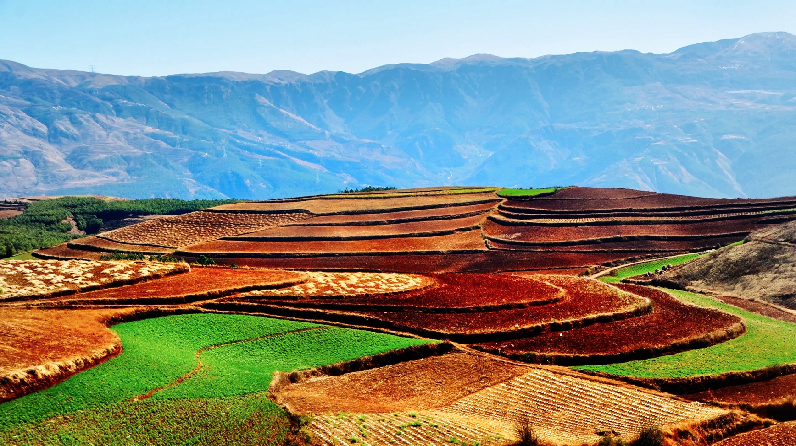

云南大学
位于昆明市以北偏东方向，属昆明市东川区。这里方圆近百里的区域是云南红土高原上最集中、最典型、最具特色的红土地。衬以蓝天、白云和那变幻莫测的光线，构成了红土地壮观的景色。
东川红土地位于昆明市东川区、一个叫“花石头”（在109公里里程碑处）的地方，被专家认为是全世界除巴西里约热内卢外最有气势的红土地，而其景象甚至比巴西红土地更为壮美。
放眼望去，山川和原野呈现出一片片暗红、紫红、砖红等不同的红色，方圆数百里大大小小的山头、山坡上，油菜花与洋芋花热烈地绽放着，金色的麦浪在清凉的山风下如碧浪般翻滚，一层绿，一层白，又一层红，一层金。
行走在松软湿润的红土地上，极目眺望，那土那田在雨水的滋润下色泽如油般浓厚，明艳透亮。红色越发浓烈，绿色更加艳丽，黄色格外耀眼，白色一片纯净，一点点都在显示秋意……田间农民劳作的身影，一举一动都像是艺术，不，是在创造艺术。眼看那斑斓的色块在他们的手中渐渐形成又慢慢改变，多么神奇！这时候唯一要做的事情就是赶紧举起手中的相机。
云南大学地球科学学院@2021~2022